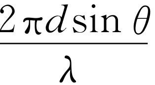

第29章 干涉
§29-1 电磁波
在本章中我们将用较多的数学方法来讨论上一章的问题。我们已定性说明在两个源的辐射场中有极大与极小存在，现在的问题是用数学方法详细描述此辐射场，而不是只定性地描述它。
我们已经相当满意地分析了式（28.6）的物理意义，但尚有几点需要用数学方法分析一下。第一，如果一个电荷沿一直线作振幅很小的上下加速运动，在与运动轴成θ 角的方位上的场就沿着与视线垂直的方向，并在包含加速度与视线的平面内（图29-1）。如果把距离叫做r ，那么在t 时刻电场的大小为
其中a （t -r /c ）是（t -r /c ）时刻的加速度，叫做推迟 加速度。
现在画出各种情况下电场的图像是很有意义的。当然，有趣的是因子a （t -r /c ）。为了理解它，可取最简单的情况，即θ =90°，然后用图画出场来。我们以前所考虑的是站在某一位置上看该处的场如何随时间而变化，而现在我们来看一下在某一给定时刻，在空间不同位置上场是什么样的。所以，我们要的是能告诉我们在不同位置上电场如何的一幅“快照”。当然它取决于电荷的加速度。假如电荷起先作了某种特殊的运动：它原来静止着，突然以某种方式作加速运动，然后停止，如图29-2所示。过一会儿，我们就来测量不同地方的场。可以断言此场将如图29-3所示。每一点的场取决于前一时刻的加速度，而提前的时间即为延迟量r /c 。越是远的点的场取决于越是提前的时刻的加速度。所以图29-3中的曲线在某种意义上其实就是“倒转”画的加速度作为时间函数的图；距离与时间以比例常数c 联系起来，而c 我们经常取作1。只要想一下a （t -r /c ）的数学性质，这一点是容易理解的。显然，如果使时间增加一个小量Δt ，那么此时a （t -r /c ）的值将与距离减少一个小量Δr =-c Δi 所得的值相同。
图29-2 某电荷的加速度与时间的关系
图29-3 下一时刻的电场与位置的关系（忽略1/r 引起的改变）
换一种说法：如果时间增加一个小量Δt ，只要距离增加 一个小量Δr =c Δt ，我们就能使a （t -r /c ）恢复到原来的值。那就是说，随着时间的延续，场像波一样从源点向外运动 。这就是为什么我们有时说光像波一样传播的理由。说场被延迟了，或说电场随着时间的延续而向外运动，两者是等价的。
一个有趣的特殊情况是电荷q 在那里以振荡方式作上下运动。我们在上一章中用实验方法研究过的就是这样一种情况，其任一时刻的位移x 等于某一常量x 0 ，即振荡的幅值，乘上cos ωt 。这样，加速度就是
a =-ω 2 x 0 cos ωt =a 0 cos ωt ，（29.2）
其中a 0 是最大加速度-ω 2 x 0 。将此式代入式（29.1），得
现在，我们忽略角度θ 和常数因子，来看一看它作为时间和位置的函数是什么样子。
§29-2 辐射的能量
首先，在任一特定时刻和任一特定地点，场的强度与距离r 成反比，正如我们以前所提及的。现在，我们必须指出，波所包含的能量 ，或这样的电场所具有的能量效应，与场的平方 成正比。因为，如果电场中有某种电荷或振子，那么让电场作用于其上时，它将使其运动。如果这是一个线性振子，则由作用在电荷上的电场产生的加速度、速度和位移与场成正比。因此在电荷中出现的动能与场的平方 成正比。所以我们就把场所能传递给系统的能量当作与场的平方成正比。
这意味着当我们远离源时，源所能提供的能量减少了；事实上，它与距离的平方成反比 。这有一个很简单的解释：如果我们想要在距离r 1 处收集起包含在某一角锥中的波的全部能量（图29-4），同时又在另一距离r 2 处收集之，我们发现在任一处单位面积的能量与r 的平方成反比，但角锥所截的面积则直接 与r 的平方成正 比。所以不论我们离得多远，从给定锥角的波中所能获取的能量是相同的！特别是，若在四周放置一圈吸收振子，则从整个波中所能获取的总能量是某一定值。因而，E 的振幅随1/r 而变化这一事实与存在一个永不散失的能流以及一个不断行进着的、散布在越来越大的有效面积中的能量这一说法是一样的。这样我们就看到，当一电荷发生振荡以后，它就损失了永远不能收回的若干能量；此能量不断地向越来越远的地方散失，并不减少。因而，如果我们离得足够远，使我们的基本近似很好成立，电荷就不可能收回它所辐射掉的能量。当然能量仍存在于某处，并且可以被其他系统所收集。我们将在第32章中进一步研究这种能量“损失”。
现在我们来较仔细地考虑式（29.3）所表示的波在给定的地点如何随时间变化，以及在给定时刻如何随位置变化。我们仍忽略常数及1/r 所引起的变化。
§29-3 正弦波
首先固定位置r ，观察作为时间函数的场，它以角频率ω 振荡着。角频率可以定义为相位随时间的变化率 （每秒弧度）。我们已学过这样的量，因此现在我们对它应很熟悉。周期 是振荡一次——即一整周所需的时间，我们也已经得出过这个量，它是2 π /ω ，因为ω 乘上周期是余弦的一周。
现在我们引入一个物理学中十分常用的新的量。这与相反的情况有关，即固定t 而观察波作为距离r 的函数。当然我们注意到，作为r 的函数，波（29.3）仍是振荡的。这就是说，暂且不考虑所忽略的1/r ，当我们改变位置时，会看到E 在振荡。因而，与ω 类似，我们可以定义一个叫做波数 的量，记为k 。它被定义为相位随距离的变化率 （每米弧度）。这就是说，当我们于一固定时刻在空间运动时，相位在改变着。
另有一个与周期相应的量，我们可以称之为空间的周期，但它常被称为波长，记为λ 。波长是一个整周的波所占的距离。容易看出，波长是2π /k ，因为k 乘以波长，即每米弧度的改变值乘上一周中的米数，应为一整周中相位改变的弧度数，而一周中相位必须改变2π 。所以kλ =2π 与ωt 0 =2π 恰好类似。
在我们所要讨论的波中，频率与波长之间有着确定的关系，但上述k 与ω 的定义都十分一般。这就是说，在其他物理条件下，波长与频率的关系不一定一样。但在我们的情况下，相位随距离的变化率容易决定，因为，如果把 叫做相位，则φ 对距离r 的偏导数即变化率 为
同样的关系可以有许多表示法，如
λ =ct 0 ，（29.5）
ω =ck ，（29.6）
λν =c ，（29.7）
ωλ =2π c .（29.8）
为什么波长等于c 乘周期？这很容易，因为如果我们停着等一个周期过去，以速度c 传播的波将移动距离ct 0 ，当然恰好移动了一个波长。
在除光以外的物理情况下，k 不一定与ω 有这样简单的关系。若让距离沿x 轴，那么对于以波数k 和角频率ω 沿x 方向运动的余弦波，一般可将其公式写成cos（ωt -kx ）。
我们既已引进波长的概念，就可以再讲一些式（29.1）成立的条件。我们记得场是由几部分组成的，其中一部分与r 成反比，另一部分与r 2 成反比，其余的则衰减得更快。值得了解一下在什么情况下场的1/r 部分成为最重要的部分，而其余部分则相对地很小。当然，答案是“如果我们离得‘足够远’”，因为与距离平方成反比的项跟1/r 项比较起来最终变得完全可以忽略。多远才是“足够远”？答案是，定性的讲，其他的项要比1/r 项小λ /r 的量级。这样一来，只要我们超过几个波长，式（29.1）就是场的很好的近似了。有时把超过几个波长的区域称为“波区”。
§29-4 两个偶极辐射子
接下来我们来讨论两个振子的效应合成时的数学，以找出某一给定点的净场。在上一章所考虑的几种情况下，这是很容易的。我们将首先对效应作定性描述，然后作较定量的描述。我们考虑简单的情况，振子的中心与探测器位于同一水平面上，而振动沿铅直方向。
图29-5（a）表示这样两个振子的俯视图，在此特例中它们位于南北方向，相距半个波长，并且同相位地一起振荡。我们称此相位为零相位。现在我们想知道在不同方向上的辐射强度。所谓强度，其意义就是每秒钟通过的场所携带的总能量，它与场的平方的时间平均值成正比。所以，当我们想要知道所看到的东西的光有多亮时，是指电场的平方，而不是电场本身（电场告诉我们静止电荷所感受的力的强度，但所通过的能量，以每平方米瓦特为单位，则与场的平方成正比。我们将在下一章中导出此比例常数）。如果我们从西边看此装置，两个振子贡献相等并且同相位，所以电场为单个振子所产生的两倍。因而强度为只有单个振子时的四倍 （图29-5中的数字代表在该处的强度与只有单个单位强度的振子时该处强度的比）。而在沿振子连线的无论是南还是北的方向上，由于它们相隔半波长，一个振子的效应与另一个振子的效应恰好相差半周，因而其场加起来为零。在某一特定的中间角度（其实是30°）上强度是2，然后逐渐衰减，强度依次为4，2，0，等等。我们必须学习如何找出其他角度上的这些数。这是叠加两个具有不同相位的振动问题。
我们立即来看一下其他有趣的情况。假如两个振子仍相距半波长，但一个振子振动的相位α 比另一个落后半个周相［图29-5（b）］。现在西边的强度是零，因为当一个振子正在“拉”时，另一个振子正在“推”。但在北边，来自较近一个振子的信号于某一时刻到达，来自另一振子的信号则在半个周期后到达。但后者在计时上原来 就落后了半个周期，因而现在恰好与前者合拍（同时） ，所以在此方向上的强度为4个单位。在30°方向上的强度仍为2，正如我们以后可以证明的那样。
现在我们得到一个可能比较有用的有趣情况。我们指出，振子间的相位关系之所以有趣，其理由之一来自束状无线电发射机。例如，我们建造一个天线系统，并且想要发送无线电信号，比如说到夏威夷。我们就如图29-5（a）那样装置天线，并用两根天线同相位地进行广播，因为夏威夷在我们的西面。而明天我们打算向加拿大阿尔伯塔（Alberta）广播。因为它在北面，不是西面，我们只要反转一根天线的相位，就能向北广播。因而我们可以建造具有各种排列方式的天线系统。我们所说的是最简单的方式之一；可以使它们更复杂，而且用改变各天线上的相位的办法就能把波束发送到各个方向，并把大部分功率发送到我们希望输送的方向上，而根本用不着移动天线！但在上述两种情况中，当我们朝阿尔伯塔广播时，我们在复活节岛（Easter Island）上浪费了许多功率，因而问是否可能只朝一个 方向发送信号是有意义的。乍看起来我们会认为，用一对这样的天线其结果似乎总是对称的。所以，我们考虑一种能得出不对称结果的情况，以证明有变化的可能。
如果两根天线相距1/4波长，而且北边一根的振动在时间上比南边的一根落后1/4周期，那么将会发生什么情况（图29-6）？在西边我们得2，就如我们以后将看到的。在南面我们得零 ，因为若来自南边天线的信号于某一时刻到达，则来自北边天线的信号在时间 上就晚90°到达，但它在相位上本来已落后90°，因而它到达时相位总的相差180°，故没有效应。另一方面，在北面，北边天线的信号比南边天线的信号在时间上早90°到达，因为它近了1/4波长，但它的振动相位被调整得在时间上落后90°，那就刚好补偿了延迟差，于是两个信号一起 以同相位 出现，使场的强度为原来的两倍，能量为原来的四倍。
图29-6 向一个方向输送最大功率的一对偶极子天线
这样，在天线的排列与相位配置上作一些巧妙的安排，能够把功率全部发送到一个方向上。但它仍然分布在一个很大的角度上。能否将它安排得使功率更尖锐地聚焦于某一特定方向上？我们再来考虑夏威夷的情形，在那里我们朝东和朝西发送波束，但它仍散播在很大的角度上，因为即使在30°方向上仍有一半的强度——我们在浪费功率。能不能做得更好一些？我们拿两根天线相距10个波长的情形来说（图29-7），它更接近于我们在上一章做过实验的相距几个波长而不是不到一个波长的情况。此时图像就大不相同了。
图29-7 两个相距10λ 的偶极子的强度分布图
如果两个振子相距10个波长（我们取同相位的情况使之易于理解），可以看到在东西方向上它们同相，并得到很强的强度，为只有其中之一存在时的四倍。另一方面，在离开一个很小角度处，则到达时间相差180°，因而强度为零。精确地说，如果从每个振子画一直线到远处的一点，两距离之差Δ 为λ /2，即振动的半周，则它们将反相位。这时就出现第一个零点（图并没有按比例画出；它只是个草图）。这就意味着我们的确在所需要的方向上得到了一个尖锐的波束，因为只要方向稍稍移动一点儿，强度就没有了。但在实际应用时，比如我们正在设想建立一无线电广播装置，遗憾的是，如果在某一方向使程差Δ 比原来的加倍，那么就得到一整周的相位差，这又恰好与同 相位一样！于是就得到一系列的极大与极小，正像在第28章中用相距2.5λ 的两个振子得到的情况一样 [1] 。
那么，怎样才能把振子安排得可以摆脱这些额外的极大，或者所谓的“波瓣”呢？可以用相当有趣的办法摆脱这些不需要的波瓣。假如我们在已有的两根天线之间再放置另外一组天线（图29-8）。这就是说，最外边的两根天线仍相距10λ ，但在它们之间，比如说每隔2λ ，放置另一根天线，并都同相位地激励它们。现在有了六根天线，如果我们观察东西方向的强度，它们当然要比只有一根天线时强得多，场强将达六倍而强度将达三十六倍（场强的平方）。在这个方向上我们得到36个单位的强度。如果接着观察邻近的点，发现在大约以前强度是零的地方仍得到零，而再过去一些，在原来得到大“突起”的地方，现在得到一个很小的“突起” [2] 。让我们看一看为什么这样。

图29-8 六个偶极子天线装置和它的强度分布图的一部分
其理由是，虽然当距离Δ 恰好等于一个波长时我们可以预期得到一个大的突起，此时偶极子1和6的确同相位，并在该方向上正要一起加强，但3和4恰好与1和6在相位上差大约半个波长，因此虽然1和6一起推，3和4也一起推，但两者反相。于是在该方向上只有很小的强度——但仍有一点儿；它们并没有完全抵消。此类情况继续发生，我们就有了许多很小的突起，而在我们需要的方向上得到很强的波束。但在此特例中，会发生另外的情况，即：既然相邻偶极子之间的距离是2λ ，那就可能找到一个角度，使得相邻偶极子 之间的程差δ恰为一个波长，这样，来自所有偶极子的效应又同相了。每个偶极子比下一个延迟了360°，因而它们都同相地到达观察点，这样在该方向上就得到另一个很强的波束！在实际中很容易避免这一点，因为我们可以把偶极子靠得比一个波长更近。如果我们放进更多的天线，每根相隔得比一个波长更近，这种情况就不会发生。但当间隔比一个波长大，这种情况能够 在某一角度上发生这一事实，在另外的应用中——不是在无线电广播中，而是在衍射光栅 中——却是十分有趣而有用的现象。
§29-5 干涉的数学
至此，我们已完成对于偶极辐射子现象的定性分析，但我们还得学习如何定量地分析它。为了求出在最一般情况下，两个相互间本来就具有相位差α ，强度A 1 与A 2 不相等的振子的振动源在某个特定角度的方向上的总效应，我们发现必须将两个具有相同频率、但不同相位的余弦加起来。很容易求出两者的相位差；它是由距离差引起的延迟和本来就具有的振动相位差两部分组成的。数学上，我们必须求出两个波的和R
R =A 1 cos（ωt +φ 1 ）+A 2 cos（ωt +φ 2 ）.
怎样求呢？
其实很容易，我们假定大家早已知道了怎样去求。不过，我们仍将稍微详细地概述一下步骤。首先，如果我们擅长数学并熟悉余弦和正弦，就能方便地求得。最容易的是A 1 与A 2 相等的情况，假定它们都等于A 。在这样的情况下，就有（这可以称为三角解法）
R =A ［cos（ωt +φ 1 ）+cos（ωt +φ 2 ）］.（29.9）
在三角课程中，我们可能学到过下列公式
若知道此式，就能立即把R 写为
可见我们得到了一个具有新的相位与新的振幅的波动。一般地说，其结果将 是一个具有新的振幅（我们可以称之为合成振幅）A R ，以同样频率振荡而产生相位（称为合成相位）为φ R 的波动。由此看来，我们的特例具有下列结果：合成振幅为
而合成相位为两个相位的平均值，我们的问题就这样解决了。
现在假定我们记不起来两个余弦之和等于两角和之半的余弦乘以两角差之半的余弦的两倍。于是我们可以用另一个更带几何性质的分析方法。任一ωt 的余弦函数可以看作一个旋转矢量 的水平投影。假定有一长度为A 1 的矢量 A 1 随时间旋转着，因而它与水平轴的夹角为ωt +φ 1 （我们不立即考虑ωt ，并看出这不会带来什么影响）。假定我们在时刻t =0拍摄快照，尽管图像实际上以角速率ω 在旋转（图29-9）。A 1 在水平轴上的投影正好是A 1 cos（ωt +φ 1 ）。现在，当t =0时，第二个波可用另一个长为A 2 ，与水平轴夹角为φ 2 ，也在旋转着的矢量 A 2 来代表。它们都以相同的角速度ω 旋转着，因而两者的相对 位置是固定的。系统像一个刚体一样旋转着。 A 2 的水平投影为A 2 cos（ωt +φ 2 ）。但从矢量理论知道，如果我们用一般的平行四边形法则将两个矢量加起来，并画出合矢量 A R ，则其x 分量为其他两个矢量的x 分量之和。这就解决了我们的问题。很容易验证这一方法为我们上面处理的A 1 =A 2 =A这一特殊情况提供了正确的结果。在这一情况下，从图29-9可见 A R 位于 A 1 与 A 2 的中间，并与它们都构成（φ 2 -φ 1 ）/2的角。从而可见A R =2A cos［（φ 2 -φ 1 ）/2］，与前述一样。从三角形也可看出，当 A 1 与 A 2 的幅度相等时，旋转着的 A R 的相位是 A 1 与 A 2 的相角的平均值。显然，我们也容易解出振幅不相等的情况。可以把此称为解决问题的几何 方法。
还有另一种解此问题的方法，称为分析 法。此方法是，写出一些能表达与图29-9同样意义的东西，而不是去真的作那样的图。即我们不去画矢量，而是写出代表每个矢量的复数。复数的实部就是实际物理量。这样，在我们的特殊情况下，波动可用这种方式来写： ［其实部为A 1 cos（ωt +φ 1 ）］和 。现在可将两者相加
或
这样就解决了我们要求解的问题，因为它代表叠加结果是模为A R 、相角为φ R 的复数。
为了明白这种方法是如何进行的，我们来求振幅A R ，它就是 的“长度”。为了得到一个复量的“长度”，我们常用它的复共轭去乘它，这样得到长度的平方。复共轭具有同样的表示式，只是i前面的符号相反。这样我们得到
将此乘出，得 （这里的e被消去了），而交叉项则为
因为
e i θ +e-i θ =cos θ +isin θ +cos θ -isin θ .
这就是说，ei θ +e-i θ =2cos θ 。最终结果就成为
可见，这与图29-9中用三角规则得到的A R 的长度一致。
这样，两效应的总和为只有一个源存在时所得的强度 ，加上只有另一个源存在时所得的强度 ，再加上一修正项。这个修正项称为干涉效应 。它实际上就是把两个强度简单地加起来所得的结果与实际发生的情况两者之间的差别。不论它是正的还是负的，我们都称之为干涉（干涉 [3] 在一般语言中意味着对抗或妨害，但物理学上我们常不按语言原意来使用！）。如果干涉项是正的，我们就称之为相长 干涉，尽管它在除物理学家以外的任何人听来是奇怪的 [4] ！相反的情况则为相消 干涉。
现在来看如何把适用于两个振子情况的一般公式（29.16）应用到我们作过定性讨论的特殊情况中去。为了应用这个一般公式，只要找出存在于到达给定点的两信号之间的相位差φ 1 -φ 2 就行了（它当然只依赖于相位差，而不依赖于相位本身）。所以，我们来考虑两个具有相同振幅，相隔某一距离d ，并有固有相对相位α （当一个相位为零时，另一个相位为α ）的振子的情况。我们问与东西线成θ 方位角的方向上强度是多少［注意这不是 出现在图（29.1）中的同一个θ 。我们也曾为究竟是用一个像 那样不常用的符号还是用常用的符号θ 而举棋不定（图29-10）］。相位关系可以这样来找到：注意到从P 点到两个振子的程差是d sin θ ，因而由此提供的相位差是d sin θ 所含的波长数乘以2π （内行人可能会用波数k ，即相位随距离的变化率，乘以d sin θ ，其实一样）。这样，由程差引起的相位差就是 ，但由于两振子振动时间上的差，尚有附加的相位差α 。所以到达时的相位差将是
此式适用于所有情况。接着只要将此表示式代入式（29.16）并使A 1 =A 2 ，就能对两个强度相同的天线计算出所有不同的结果。
现在我们来看一看在各种情况下会出现什么结果。例如，图29-5中在30°方向上的强度为2的理由如下：两振子相隔λ /2，故在30°方向上，d sin θ =λ /4，因而
于是干涉项为零（我们是将两个互成90°角的矢量相加）。合矢量是45°直角三角形的斜边，是单位振幅的 倍；将它平方，就得到一个振子强度的两倍。其他所有情况可以用同样方法得出。